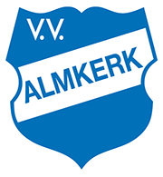

Hallo! ik ben Rick huisman, ik ben 16 jaar en ik kom uit Almkerk (Noord-Brabant).
Voordat ik op Da Vinci zat, zat ik op het Fortes Lyceum (was eerst Merewade College genoemd)
Ik woon op een kleine boerderij met iets van 20 kippen en 4 paarden daarnaast heb ik een hond.
(Dit zijn honden van hetzelfde ras. NIET MIJN HONDEN!)
In Almkerk is der niet veel te beleven naast de Albert Heijn, de bioscoop en de Golfbaan.
Hier een daar is er wel een kerkje of twee, maar het is niet echt interessant.
Qua eten is der ook weinig variatie in Almkerk. We hebben alleen friet.
Nouja we hebben ook een broodjes zaak naast het pompstation, maar dan moet je eerst een lening aanvragen want man, was is het duur daar.
Voor de rest is het wel een best dorp hoor.
Voor de voetbal-liefhebber: VV Almkerk
